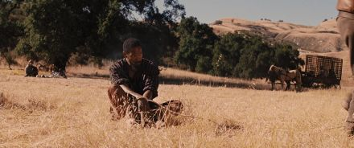

Джанго освобожденный
Краткое описание фильма
Шульц — эксцентричный охотник за головами, который выслеживает и отстреливает самых опасных преступников. Он освобождает раба по имени Джанго, поскольку тот может помочь ему в поисках трёх бандитов. Джанго знает этих парней в лицо, ведь у него с ними свои счёты.
Кадры из фильма



О фильме
| Год | 2012 |
| Страна | США |
| Жанр | вестерн, боевик, драма, комедия |
| Режиссёр | Квентин Тарантино |